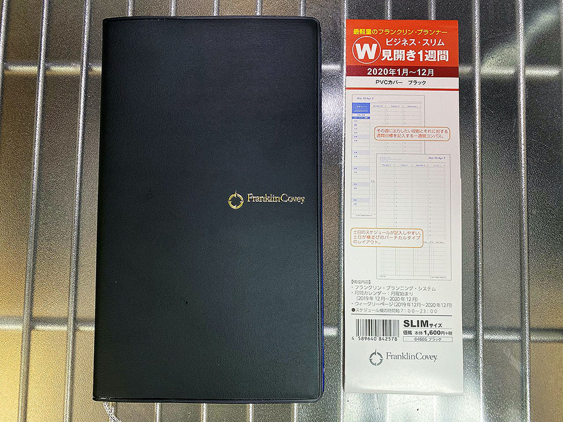
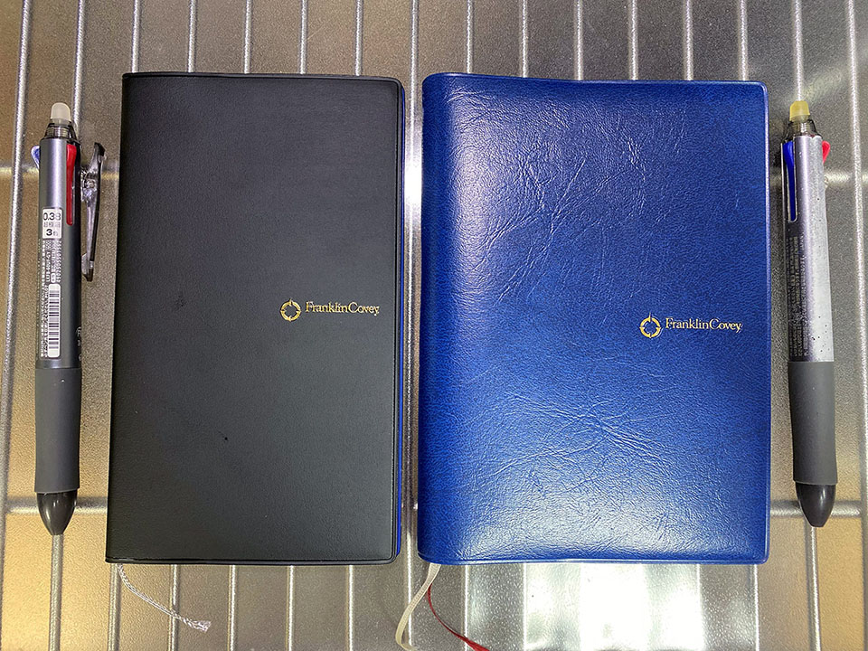
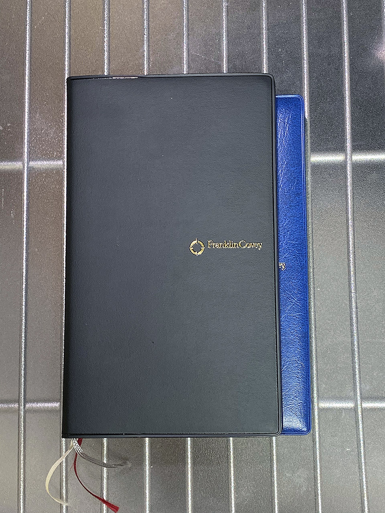
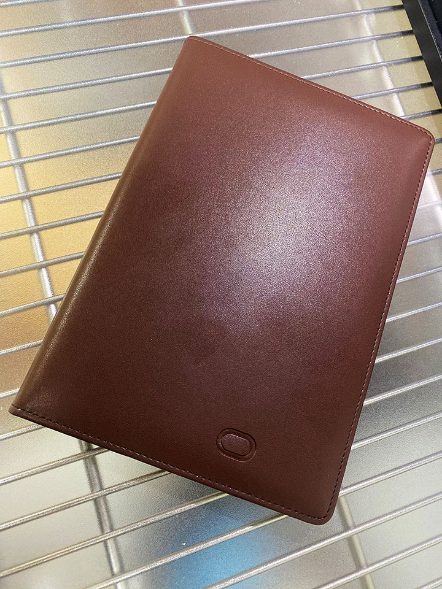

2020年のフランクリン・プランナーはシリーズ最小・最軽量のビジネス・オーガナイザー・スリムにした
2019年に引き続き、5年目となるフランクリン・プランナーの話。
2019年はほとんど使わなかった
2019年は A6 サイズ・1日1ページタイプを使っていたが、正直全然使わなかった。その理由は、全般的に仕事が少なかったから。

(↑ 2017・2018年と使ってきた A6・1日1ページタイプの同型)
作業や打合せが多い時期は、タスク整理やスケジュール調整のために使用していたが、それも1年のうち2・3ヶ月程度だった。それ以外はマジでめっきり仕事してないのに時たまちょっとした依頼作業をこなすだけで重宝されてしまい、結果的にメチャクチャ暇していた。
来年どうなるかは分からないものの、全体的に、もう手書きメモはほとんど要らないかな、という感じになってきた。2017年に転職してからは、メモは PC で取ってクラウド同期できるようになったし (前職はネット環境がない SIer だったので手書きメモが重宝した)。時々、打合せに PC を持ち出すのが面倒臭くて、形式的に手帳を持っていくくらいしか用途がないと思う。
シリーズ最小・最軽量のタイプを選んだ
そんなワケで、2020年の手帳は思い切って、シリーズ最小・最軽量の「フランクリン・プランナー ビジネス・スリム」を選ぶことにした。

↑コレ。
似たような商品で、「7つの習慣 ウィークリー・スリム」という商品もある。同じスリムサイズだが、次のような違いがある。
- ウィークリー・スリムは「7つの習慣」の概説集が付いている (コレが 26P ほどあるので分厚くなる)
- ウィークリー・スリムは罫線メモが 18P ある (ビジネス・スリムは 5P)

それ以外のカレンダーページやウィークリーページの仕様は同じ。体感の分厚さがだいぶ違う感じだ。
2019年に使用していた A6 サイズ・1日1ページタイプと比較する
さて、それでは、2019年に使用していた「1日1ページ A6 タイプ」と色々比較してみよう。
まずは外観。

A6 サイズと横並びにしてみる。

↑ 自分がお気に入りで使っているフリクション3色ボールペン (太さ 0.38) もこの機に買い直し。クリップ部分が折れたので…。
重ねてみるとサイズの違いはこんな感じ。

スリムタイプの方が高さはあるが、幅が狭い。厚みは A6 タイプの 1/5 くらいかな。スリムタイプの本体サイズは
H162×W97×D10mm（120g）
とされている。
続いて中身。
1ヶ月カレンダーページの仕様は特に変わらない。スリムタイプの方には月間目標を書く「Master Task List」と、収支を書ける「Index」ページがカレンダーページに挟まる仕様。A6 タイプにはこのページがなかった。
日々のページの仕様はこんな感じ。
| 項目 | A6 タイプ (2019年) | スリムタイプ (2020年) |
|---|---|---|
| Weekly Compass (一週間コンパス) | 4つの側面 + 役割欄7つ | 4つの側面 + 役割欄5つ |
| Weekly Tasks (週間タスクリスト) | あり (14行) | なし |
| Appointment Schedule (タイムライン) | 7〜23時 | 6〜24時 (幅は A6 の半分) |
| Prioritized Daily Task List (タスクリスト) | 10行 + QII Activities 5行 | Daily Tasks 8行 |
| Daily Notes (メモ欄) | あり (縦32行・横17列マス) | なし |
スリムタイプは8行のタスクリストと、6〜24時のタイムスケジュールが1日分のスペース。コレが両開き2ページで1週間分となっている。A6 タイプと比べて、「一週間コンパス」がデイリーと同じページになるので、見返しやすい。
スケジュール欄の時間軸表記 7:00～23：00
と公式では説明されているが、「7時」の上部と「23時」の下部に同じだけの行間が開いているので、時間軸表記はないものの、6時台・24時台のスケジュールも書ける感じ。この点は A6 タイプより時間軸が多めに取ってあって、便利かもしれない。
1日分のスペースが少なくなったが、2019年のメモ欄の使用率は皆無だったので、あまり困らないかと思う。足りなくなったら、「一週間コンパス」欄にハミ出しても良いし、「ミッション・ステートメント」あたりの演習ページに書いちゃっても良いかなと思っている。そんなことは年に何度もないと思うので。
一つ気になったのは、スリムタイプには紐タイプのしおりが1本しか入っていないこと。A6 タイプは2本入っていたので、月間カレンダーページとデイリーページの2箇所にしおりを挟んでいたが、スリムタイプは1本しかないので、どうやって運用したものか。使いながら考えてみる。
PC 中心のユーザなら必要十分
2018年・2019年と A6 タイプを使っていて、うっすら気が付いていたが、普段パソコンで仕事をしていて、メモのクラウド同期が出来る環境にいる人なら、システム手帳はほとんど利用せずに済んでしまったりする。ただ、そんな人でも時々は PC が使えないタイミングが発生するので、とりあえずメモは持っておきたかったりする。
そんな人に最適なサイズ感なのが、この「フランクリン・プランナー ビジネス・スリム」タイプだと思った。本体サイズはシリーズ最小ながら、必要な項目は A6 タイプなどともそう変わらず、日々のスケジュールの予実記録はきちんとできそうだ。
2020年に入ったら意識的にフランクリン・プランナーを使ってみて、また感想を書いてみようと思う。
(Oracle のデカめな手帳ももらったので、たくさん書く機会ができたらコッチ使おうと思う)
